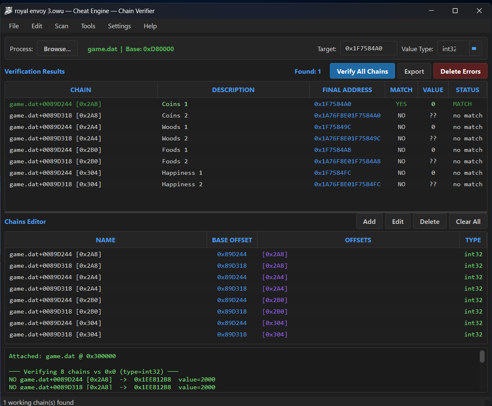

v2.0.0 — Latest Release
Find & Verify Pointer Chains
A modern pointer chain verifier and memory scanner for Windows. Dark UI, five scanning modes, auto-update — free, no ads.

ChainMatchValue
game.exe+0x89D244YES42
game.exe+0x7D6CYES128
game.exe+0xE2944NO—
game.exe+0x7635CYES999
Features
Everything You Need in One Tool
From simple value scans to multi-level pointer chains — ChainVerifier handles it all in a clean, dark interface.
Screenshots
See It in Action
Click any screenshot to view full-size.
Quick Start
Up and Running in 3 Steps
No installer, no setup wizard — just download, extract, and verify.
1
Download & Extract
Grab the ZIP from the download page and extract the single ChainVerifier.exe anywhere. Fully portable.
2
Run as Administrator
Right-click ChainVerifier.exe and select Run as Administrator.
3
Attach & Verify
Open Tools → Attach to Process, pick your target, enter an address, and click Verify All Chains.
Ready to try it?
Download the latest ChainVerifier — free, virus-free, no registration required.
FAQ
Frequently Asked Questions
Quick answers to the most common questions.